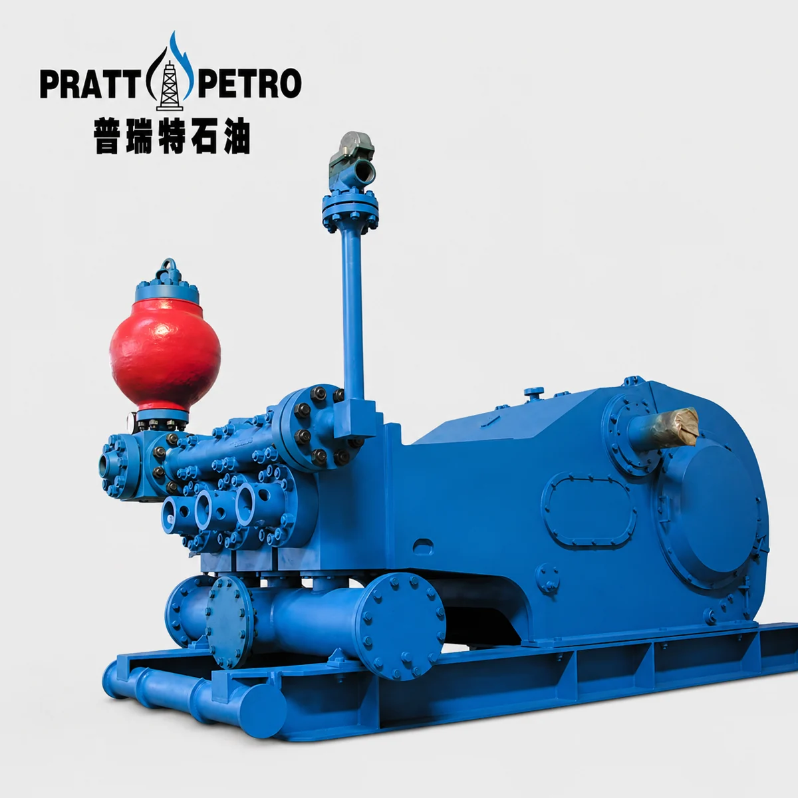

Mud Pump Parts / MODEL RANGE
3NB-1600HL Mud Pump Spare Parts
Pratt Oil supplies a complete range of spare parts for 3NB-1600HL triplex mud pumps used in oil and gas drilling operations.
Send your part number, pump nameplate, drawing or component photos to confirm the correct replacement.

MAINTENANCE / REPAIR / OVERHAUL
Replacement parts we supply
- Fluid end modules
- Liners and pistons
- Valves and valve seats
- Piston rods and extension rods
- Crossheads and guides
- Crankshafts and pinion shafts
- Connecting rods and bearings
- Valve covers and liner retainers
- Seals, gaskets, and repair kits
- Suction and discharge manifold parts
PART NUMBERS / TECHNICAL REFERENCE
3NB-1600HL parts reference
Confirm part numbers, dimensions and equipment configuration before ordering.
Use this reference to prepare your inquiry. Availability and compatibility are confirmed with your quotation.
281 parts in this reference
Download parts list (CSV) ↓| Part number | Description |
|---|---|
| GH3161-01.00(G) | Frame assembly |
| GH3161-04.01（G） | Crosshead |
| GH3161-02.00(G) | Crankshaft assembly |
| GH3161-04.02（G） | Upper guide |
| GH3161-03.00(G) | Pinion shaft assembly |
| GH3161-04.03.00（G） | Shim pack |
| GH3161-04.00(G) | Crosshead assembly |
| GH3161-04.04（G） | Adjustment shim |
| NB1602.01.00 | Fluid end assembly |
| GH3161-04.05（G） | Packing box |
| NB800G.14 | Indicator plate |
| GH3161-04.06（G） | Oil seal ring |
| GB/T827-1986 | Rivet: 3×10 |
| GB/T3452.1-1992 | O-ring: 190×3.55G |
| NB800G.15.00 | Oil level gauge assembly |
| GH3161-04.07（G） | Oil seal: 5"×6.25" ×0.625" |
| GB/T5782-2000 | Bolt: M27*90 |
| GH3161-04.08（G） | Sealing washer |
| GB/T6170-2000 | Nut: M27 |
| GH3161-04.09（G） | End cover |
| GB/T93-1987 | Washer: 27 |
| GH3161-04.10（G） | Locking spring |
| GH3161-31（G） | Adjustment shim |
| GH3161-04.11（G） | Mud guard plate |
| NB1602.03 | Crosshead opening cover |
| GH3161-04.12（G） | Intermediate clamp rod |
| GH3161-21(G) | Sealing gasket |
| GH3161-04.13（G） | Crosshead pin |
| GB/T5780-2000 | Bolt: M16*45 |
| GB/T3452.1-1992 | O-ring: 125×7.0G |
| GB/T95-2002 | Washer: 16 |
| GB/T70-1985 | Screw: M20×65 |
| GH3161-18.00（G） | Drain cover |
| GH3161-04.14（G） | Sealing gasket |
| GH3161-19（G） | Sealing washer |
| GB/T3452.1-1992 | O-ring: 160×7.0G |
| GB/T5780-2000 | Bolt: M12*35 |
| GH3161-04.15（G） | Lower guide |
| GB/T95-2002 | Washer: 12 |
| GH3161-04.16（G） | Crosshead pin guard plate |
| GB/T5780-2000 | Bolt: M16*60 |
| GH3161-04.17（G） | Crosshead bearing: 254941QU |
| GB/T41-2000 | Nut: M16 |
| GH3161-04.18（G） | Connector nut: NPT3/8×50.8 |
| GB/T93-1987 | Washer: 16 |
| GH3161-04.19（G） | Bolt: M24×60 |
| GB/T5781-2000 | Bolt: M12*30 |
| GH3161-04.20（G） | Bolt: M24×70 |
| GH3161-14.00(G) | Plug plate |
| GH3161-04.21（G） | Fixing plate |
| GH3161-15(G) | Sealing gasket |
| GB/T5780-1986 | Bolt: M10×40 |
| NB800G.09 | Sealing washer |
| GB/T93-1987 | Washer: 10 |
| NB800G.10.00 | Ventilation cap |
| GB/T4240-1993 | Stainless steel wire: φ1.6 |
| GH3161-30.00(G) | Plug panel assembly |
| 242 胶 | Anaerobic sealing adhesive |
| NB1602.04 | Nameplate |
| GH3161-06.01（G） | Square key: 4.76×4.76×25.4 |
| GB/T818-2000 | Screw: M4×16 |
| GH3161-06.02.00（G） | Gear oil pump assembly |
| GH3161-12.00(G) | Hoist |
| GH3161-06.03（G） | 90° pipe connector: M18×1.5-6g-NPT1/4 |
| GH3161-13.00(G) | Suspension support |
| GH3161-06.04（G） | Hollow bolt |
| NB1602.08.00 | Supplied tools |
| GB/T70-1985 | Screw: M8×40 |
| NB1602.09.00 | Supplied spare parts |
| GH3161-06.05（G） | 90° pipe connector: M24×1.5-6g-NPT1/2 |
| GH3161-06.00(G) | Power end lubrication assembly |
| GH3161-06.06（G） | 90° pipe connector: M12×1.25-6g-NPT1/4 |
| GH3161-01.01.00（G） | Frame |
| GH3161-06.07（G） | 90° pipe connector: M16×1.5-6g-NPT1/4 |
| GH3161-01.02（G） | Main bearing cover |
| GB/T1527-1997 | Copper tube: φ8×305 |
| GH3161-01.03（G） | Gasket |
| GH3161-06.08（G） | Nut: M12×1.25-6H |
| GH3161-01.04（G） | Connector: NPT3/4-NPT3/4 |
| GH3161-06.09（G） | Connector seat (II) |
| GH3161-01.05（G） | Plug bolt: NPT3/4 |
| GH3161-06.10（G） | Straight connector: M24×1.5-6g |
| GH3161-02.01.00（G） | Main bearing end cover |
| GB/T1527-1997 | Copper tube: φ16×686 |
| GH3161-02.02（G） | Main bearing sleeve (right) |
| GB/T1527-1997 | Copper tube: φ16×331 |
| GH3161-02.03（G） | Sealing washer |
| GH3161-06.11.00（G） | Pipe clamp (I) |
| GH3161-02.04（G） | Internal retaining ring |
| GH3161-06.12（G） | 45° pipe connector |
| GH3161-02.05.00（G） | External retaining ring |
| GB/T1527-1997 | Copper tube: φ10×838 |
| GH3161-02.06（G） | Connecting rod |
| GB/T1527-1997 | Copper tube: φ12×305 |
| GH3161-02.07（G） | Locating ring (I) |
| GH3161-06.13.00（G） | Pipe clamp: φ8 |
| GH3161-02.08.00（G） | Hollow crankshaft |
| GB/T1527-1997 | Copper tube: φ8×762 |
| GH3161-02.09（G） | Locating ring (II) |
| GB/T1527-1997 | Copper tube: φ8×508 |
| GH3161-02.10.00（G） | Large ring gear |
| GB/T1527-1997 | Copper tube: φ8×229 |
| GH3161-02.11（G） | Bolt: M39×3-6g×170 |
| GH3161-06.14（G） | Plug bolt: NPT1/4 |
| GH3161-02.12（G） | Spacer ring |
| GB/T1527-1997 | Copper tube: φ8×915 |
| GH3161-02.13（G） | Main bearing sleeve (left) |
| GB/T1527-1997 | Copper tube: φ8×1194 |
| GH3161-02.14（G） | Retaining ring |
| GB/T1527-1997 | Copper tube: φ8×1016 |
| GH3161-02.15（G） | Guard |
| GH3161-06.15（G） | Connector seat (I) |
| GH3161-02.16（G） | Main bearing bolt: 3-8UN-3A |
| GH3161-06.16（G） | Nut: M16×1.5-6H |
| GH3161-02.17（G） | Shim pack |
| GH3161-06.17.00（G） | Pipe clamp: φ12 |
| GH3161-02.18（G） | Screw: M16×120 |
| GH3161-06.18（G） | Sealing gasket |
| GH3161-02.19.00（G） | Locking nut: M39×3-6H |
| GB/T5781-1986 | Bolt: M6×20 |
| GH3161-02.20（G） | Bolt: M16×40 |
| GH3161-06.19（G） | Oil nipple |
| GB/T5783-1986 | Bolt: M16×45 |
| GB/T1527-1997 | Copper tube: φ12×610 |
| GH3161-02.21（G） | Eccentric bearing: 929/660.4QU |
| GB/T1527-1997 | Copper tube: φ8×813 |
| GH3161-02.22（G） | Main bearing: 3G3003760HY |
| GH3101-06.20（G） | Straight connector: M12×1.25-6g |
| GB/T848-1985 | Washer: 16 |
| GH3161-06.21.00（G） | Double pipe clamp: φ8 |
| GB/T343-1994 | Locking wire: SZ-1,50 |
| GB/T1527-1997 | Copper tube: φ10×1956 |
| GB/T343-1994 | Locking wire: SZ-3,00 |
| GB/T1527-1997 | Copper tube: φ8×1956 |
| 242 | Anaerobic sealing adhesive |
| GB/T1527-1997 | Copper tube: φ8×2311 |
| GH3161-02.23（G） | Screw: M16×100 |
| GB/T1527-1997 | Copper tube: φ8×1600 |
| GH3161-03.01（G） | Key: 50.8×241.3 |
| GB/T1527-1997 | Copper tube: φ8×1245 |
| GH3161-03.02（G） | Pinion shaft |
| GH3161-06.22（G） | Pipe connector: NPT1/4-M14×1.5-6H |
| GH3161-03.03（G） | Wear-resistant sleeve |
| GH3161-06.23（G） | Sealing washer |
| GH3161-03.04（G） | End cover |
| GH3161-06.24.00（G） | Shim pack |
| GH3161-03.05（G） | Sealing washer |
| GH3161-06.25.00（G） | Support |
| GH3161-03.06（G） | Sealing washer |
| GH3161-06.26（G） | Straight connector: M16×1.5-6g |
| GH3161-03.07（G） | Bearing sleeve |
| GB/T93-1987 | Washer: 8 |
| GH3161-03.08（G） | Retaining ring |
| YYFJ-L20 | Relief valve |
| GH3161-03.09（G） | Sealing washer |
| GB/T93-1987 | Washer: 6 |
| GH3161-03.10.00（G） | Oil collector |
| 2S | Gear oil pump |
| GB/T5782-1986 | Bolt: M12×35 |
| Y-60Z | Dual-scale shock-resistant pressure gauge: (M14×1.5)(0–1.6Ma/0–230psi) |
| GB/T5783-1986 | Bolt: M22×50 |
| GH3161-06.27（G） | Straight connector: M18×1.5-6g-NPT3/8 |
| GH3161-03.11（G） | Oil seal: 9.125"×10.375"×0.625" |
| GH3161-06.28.00（G） | Oil filter assembly |
| GH3161-03.12（G） | Bearing: 4G32844H |
| 609 或680 | Anaerobic adhesive |
| GB/T93-1987 | Washer: 22 |
| GH3161-06.29（G） | Nut: M18×1.5-6H |
| GB/T93-1987 | Washer: 12 |
| GH3161-06.30（G） | Nut: M24×1.5-6H |
| GH3161-03.13（G） | Pump flange |
| GH3161-06.31（G） | Straight connector: M12×1.25-6g-NPT1/4 |
| GB/T5782-1986 | Bolt: M16×50 |
| GH3161-12.01（G） | Pin |
| GH3161-12.02（G） | Flat washer (I) |
| 277 | Anaerobic sealing adhesive |
| GH3161-12.03（G） | Side plate |
| NB1602.01.04.02 | Stud: M42×2-6h-M42×3-6gx181 |
| GH3161-12.04（G） | Lifting plate |
| NB1602.01.04.03 | Nut: M42×3-6H(SPL) |
| GH3161-12.05（G） | Small shaft |
| NB1602.01.04.04 | Stud: M45×2-6h-M45×3-6g×589 |
| GH3161-12.06（G） | Flat washer (II) |
| NB1602.01.04.05 | Nut: M45×3-6H(SPL) |
| GH3161-12.07（G） | Sleeve |
| NB106.05.05.01 | Valve body |
| GH3161-12.08（G） | Bearing gland (I) |
| NB106.05.05.02 | Valve nut |
| GH3161-12.09（G） | Gasket |
| NB100.05.11.03 | Locking spring |
| GH3161-12.10（G） | Roller |
| NB100.05.11.04 | Packing cover |
| GH3161-12.11（G） | Bearing gland (II) |
| GB/T308 | Steel ball |
| GH3161-12.12（G） | Gasket |
| HTNB506.03.01 | Valve rubber |
| GH3161-12.13（G） | Angle steel |
| NB100.05.11.06 | Valve seat |
| GH3161-12.14（G） | Sleeve |
| NB100.05.11.07 | Valve guide frame |
| GB/T68-1985 | Screw: M5×8 |
| HTNB162.04.02 | Bimetallic liner |
| GB/T276-1994 | Bearing: 6305 |
| HTNB162.04.03 | Bimetallic liner |
| GB/T5783-1986 | Bolt: M6×16 |
| HTNB162.04.04 | Bimetallic liner |
| HTNB162.04.05 | Bimetallic liner |
| HTNB162.04.06 | Bimetallic liner |
| GB/T6170-1986 | Nut: M16 |
| HTNB162.04.07 | Bimetallic liner |
| GB/T6170-1986 | Nut: M24 |
| HTNB162.04.08 | Bimetallic liner |
| NB800G.10.01 | Guard |
| HTNB506.02.01.00 | Piston ∅130 |
| NB800G.10.02 | Connecting plate (I) |
| HTNB506.02.02.00 | Piston ∅140 |
| NB800G.10.03 | Gasket |
| HTNB506.02.03.00 | Piston ∅150 |
| NB800G.10.04 | Connecting plate (II) |
| HTNB506.02.04.00 | Piston ∅160 |
| GB/T5781-2000 | Bolt: M10×25 |
| HTNB506.02.05.00 | Piston ∅170 |
| NB800G.10.05 | Connector |
| HTNB506.02.06.00 | Piston ∅180 |
| NB800G.10.06 | Filter screen pressure plate |
| GB/T3452.1 | O-ring: 345×7 |
| NB800G.10.07 | Copper mesh |
| GH3161-05.34（G） | Suction flange (I) |
| NB800G.10.08 | Upper exhaust cap |
| GH3161-05.38（G） | 12" suction port plug plate |
| GB/T67-2000 | Screw: M5×10 |
| GH3161-05.35（G） | Suction flange (II) |
| NB1602.01.01.00 | Suction cylinder assembly |
| GH3161-05.36（G） | Plug bolt: NPT1 1/2 |
| HTNB506.03.00 | Valve assembly |
| GH3161-05.33.00（G） | Suction air chamber |
| NB2200G.05.33 | Valve spring |
| NB1602.01.01.01 | Suction cylinder |
| NB2200G.05.34.00 | Valve stem guide |
| NB2200G.05.38.03 | Pressing plate |
| 243 | Anaerobic sealing adhesive |
| NB2200G.05.38.02 | Cylinder seal ring |
| NB2200G.05.36 | Buffer washer |
| NB1602.01.01.02 | Stud: M24×2-6h-M24×3-6g×75 |
| NB2200G.05.35 | 90° nut: NPT3/8 |
| NB1602.01.01.03 | Nut: M30×3-6H(SPL) |
| NB2200G.05.37 | Valve cover seal ring |
| NB2200G.05.01.00 | Valve gland |
| NB1602.01.04.01 | Discharge hydraulic cylinder |
| NB2200G.05.03 | Valve cover |
| GH3161-05.01.02（G） | Stud: M27×2-6h-M27-6gx185 |
| NB1600M.01.02.00H | Discharge pipeline |
| GH3161-05.01.03（G） | Nut: M27-6H(SPL) |
| NB1600M.01.03H | 5" discharge port plug plate: 5 1/8" |
| GH3161-05.01.05（G） | Stud: M39×2-6h-M39×3-6gx120 |
| NB1602.01.02 | Stud: M30×3-6g×245 |
| GH3161-05.01.06（G） | Nut: M39×3-6H(SPL) |
| NB1602.01.03 | Nut: M30×3-6H(SPL) |
| GH3161-05.22.00（G） | Clamp assembly |
| NB2200G.05.04 | Discharge pipe seal ring |
| GH3161-05.23（G） | Cylinder liner end cover |
| NB1602.01.04.00 | Discharge cylinder assembly |
| HTNB506.01 | Piston seal ring |
| NB1600M.01.07H | Cylinder liner seal ring |
| HTNB506.02.00 | Piston |
| GH3161-05.15（G） | Wear-resistant disc |
| GH3161-05.32.00(G) | Piston nut |
| GH3161-05.40（G） | Washer: 39 |
| NB2200G.05.28 | Cylinder seal ring |
| GH3161-05.16（G） | Cylinder liner flange |
| GB/T5782-2000 | Bolt: M22×60 |
| GH3161-05.17.00（G） | Cylinder liner packing cover |
| GB/T3452.1 | O-ring: 190×7 |
| GH3161-05.20（G） | Cylinder liner retaining ring |
| NB1600M.01.10.00H | Suction pipeline |
| GB/T3452.1 | O-ring: 200×7 |
| GH3161-05.26.00（G） | Shim pack |
| NB106.05.09 | Piston rod |
| GH3161-05.19.00（G） | Spray pipe assembly |
| GB/T5782-2000 | Bolt: M27×90 |
| HTNB162.04.00 | Bimetallic liner |
Build your 3NB-1600HL parts list.
Send the pump model, required parts and quantities. Include drawings or nameplate photos to help confirm fit.
Jinan Pratt Oil Equipment Co., Ltd. · 2000@pratt-oil.com